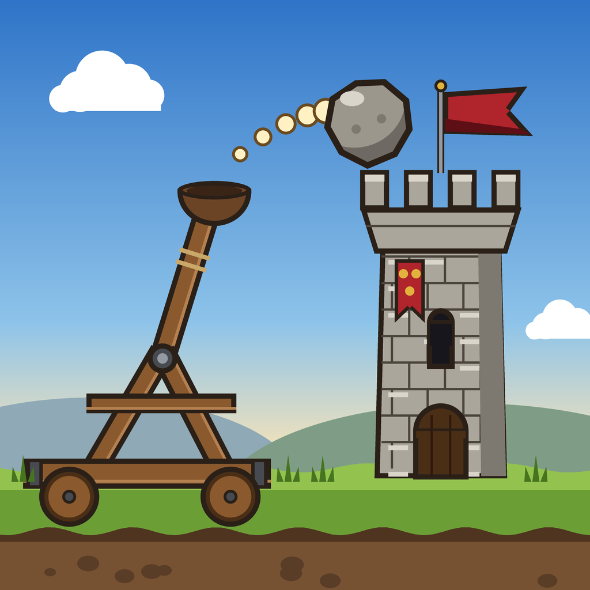
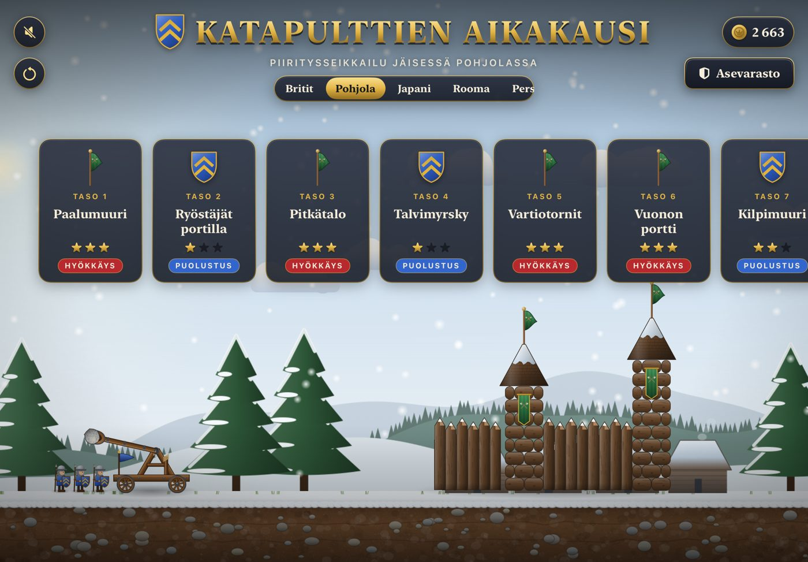
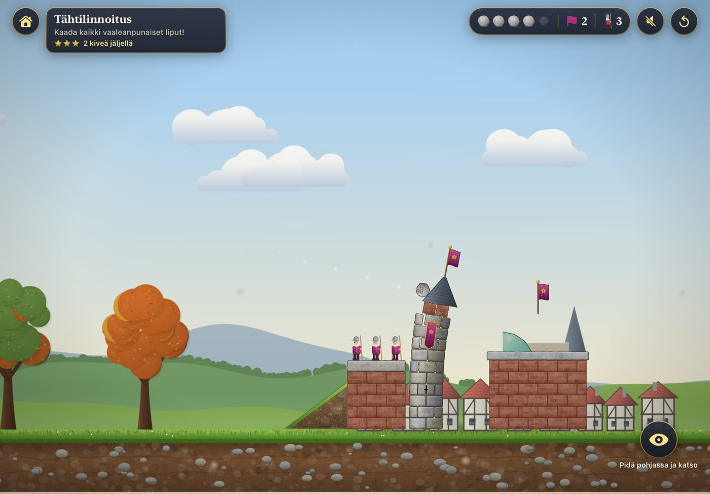
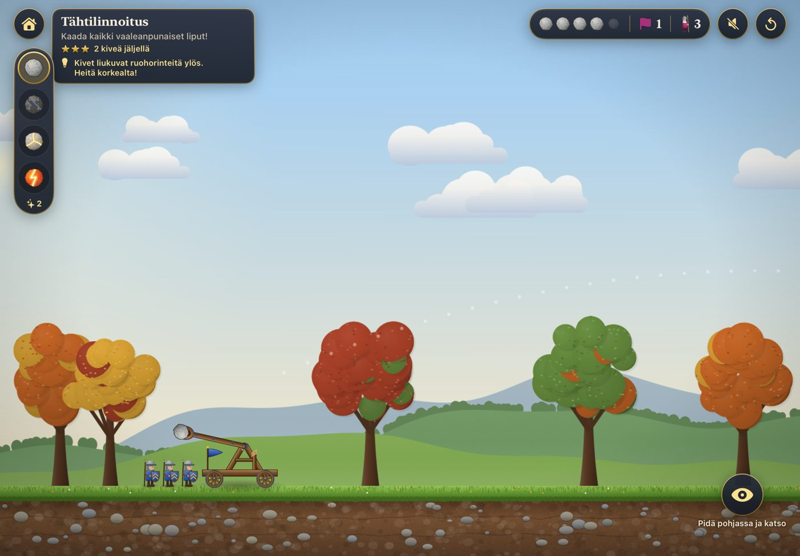

Age of Catapults (Katapulttien aikakausi) is an ad-free physics siege game for iPhone and iPad, made by Nuutti Santaniemi in Finland.
Questions, problems or ideas? E-mail n.santaniemi@gmail.com. Please tell which device and iOS version you use.
Are there in-app purchases or ads? No. The gold in the game is earned only by playing.
How do I start over? Use the "Start over" button on the title screen. It asks first, then erases your progress on this device.
Is my progress backed up? Progress is saved only on your device (and in your own device backup, if you use one).
Kysymykset, ongelmat ja ideat: n.santaniemi@gmail.com. Kerro, mikä laite ja iOS-versio sinulla on.
Onko pelissä mainoksia tai sovelluksen sisäisiä ostoja? Ei. Pelin kultaa saa vain pelaamalla.
Miten aloitan alusta? Paina aloitusruudun "Aloita alusta" -painiketta. Peli kysyy ensin ja poistaa sitten edistymisen tältä laitteelta.